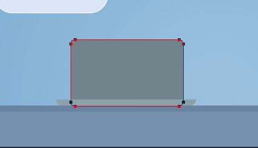
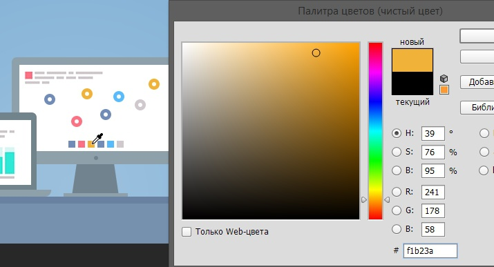

Сегодня мы рассмотрим создание иллюстрации для сайта в стиле Флэт.
Для начала откроем Photoshop и создадим документ, указав следующие размеры:
Создадим новый слой и зальем его цветом #81b0d5:
Сделаем эффект голубого неба. Для этого создадим новый слой и мягкой кистью белого цвета с непрозрачностью 25% нарисуем еле заметное пятно достаточно большого размера внизу прямоугольника:
Сделаем подставку для девайсов. Для этого создадим два прямоугольника разной толщины и зальем верхний цветом #6982A1, а нижний цветом #7591AE:
Теперь нарисуем тучки. Для этого создадим прямоугольник с закругленными углами и два круга инструментом «Эллипс». Вторую тучку сделаем копированием первой и отзеркаливанием с уменьшением масштаба:
Преобразуем наши тучки в смарт объекты и применим к ним следующий стили:
Фон для наших девайсов готов, теперь приступим к созданию самих объектов иллюстрации.
Для начала нарисуем флетовый ноутбук. Нарисуем основу ноута инструментом «Прямоугольник». Ширина основы 230 пикс., высота – 10:
Зальем основание цветом #8EA1AB. Сделаем низ основания закругленным. Для этого инструментом перспектива сблизим нижние точки прямоугольника:
И инструментом «Перо» с нажатой кнопкой Alt добавим закругления:
Точно также сделаем и с другой стороны основания.
Создадим экран ноутбука. Сделаем это прямоугольником со скругленными углами. Радиус закругление, ориентировочно, 7 пикс. Зальем форму цветом #71838B:
Обратите внимание, ширина и высота экрана ноута должна соответствовать размеру HD, чтобы картинка не выглядела слишком мультяшно. То-есть пропорции реальных девайсов должны быть соблюдены.
Еще важный момент – экран должен быть уже основания. Так как он находится дальше, по правилам перспективы он должен быть меньше.
Добавим у основания небольшую выемку. Можно просто скопировать основание, уменьшить и закрасить более светлым цветом:
Вообще, Флет стиль – это очень упрощенный стиль рисования иллюстраций и иконок. Но основные делали, которые придают объектам узнаваемую форму – должны быть.
Добавим экран и блик веб-камеры. Так как экран у ноутов светится, было бы логичным сделать его чисто белым. Соблюдаем пропорции.
Обратите внимание. Элементы флетовой иллюстрации не должны быть размытыми. Для этого увеличиваем каждый элемент и корректируем инструментом «Масштаб»:
Инструментами «Прямоугольник» и «Текст» наполним экран разноцветными графиками и текстом:
Создадим группу слоев и отправим в нее все детали ноутбука.
Создадим еще одну группу слоев и поместим ее под группой с ноутбуком. Приступим к рисованию монитора.
Точно также, как и у первой иллюстрации – ноута, создадим экран с закругленными углами. Зальем рамку монитора цветом #8EA1AB.
Не забываем про пропорции. Если вы не знаете пропорции девайсов, лучше скачать из интернета их фотографии и измерить линейкой. Например, есть хорошая линейка mySize для Windows.
Не забываем, также, «лечить» алиасы масштабированием:
Добавим внизу рамки монитора некое подобие логотипа или кнопки и нарисуем подставку. Стойку подставки растягиваем в небольшой треугольник трансформированием перспективы. Цвет стойки и логотипа: #71838E, цвет основания стойки – такое-же, как основания ноута - #8EA1AB:
Выравниваем элементы по центру выделив рамку, относительно которой хотим применить выравнивание и сам элемент:
Сверху слева нарисуем в мониторе квадратик и напишем рандомный нечитаемый текст, как это делали в экране первой иллюстрации:
Для данной иллюстрации используем любой уплотненный шрифт.
Внизу иллюстрации монитора добавим 6 разноцветных квадратиков, размером 10 х 10. Цвета квадратиков будут соответствовать цветам точек на диаграмме - #728CB8, #FF7285, #F1B23A, #728CB8, #59BBFF и #CFC8CC:
Сгруппируем квадраты и выровняем по центру относительно иллюстрации монитора.
Инструментом «Эллипс» нарисуем несколько кружков, рандомно разбросанных по графику соответствующего цвета. Внутри каждой точки графика нарисуем кружок белого цвета. Цвета для каждой точки можно брать из квадратиков:
Ниже всех точек создадим слой и нарисуем кривую, соединяющую центры всех точек инструментом «Перо», предварительно выбрав режим пера – «Контур»:
Далее из контекстного меню, по щелчку правой кнопкой мыши, выбираем пункт «Выполнить обводку контура». Инструмент устанавливаем – «Кисть».
Параметры кисти:
Непрозрачность кисти – 100%.
На получившуюся фигуру делаем наложение цвета #5E7BAC:
Нарисуем лупу, которая будет увеличивать второй узел диаграммы. Для этого создадим новый круг, зальем его цветом #E7EEF8. Добавим к кругу обводку 3 пикс., цветом #CFC8CC:
Инструментом «Прямоугольник со скругленными углами» нарисуем вытянутую ручку лупы цветом #74838E и разместим ее под углом:
Теперь внутри лупы, в новой группе слоев, нарисуем прямоугольниками и круглешками увеличенный нод. Для того, чтобы увеличенный узел и соединительные линии не выходили за границы лупы, растрируем группу с увеличенным узлом и создадим обтравочную маску:
В результате, у нас должен получиться такой монитор:
Нарисуем иллюстрацию iPad. Не забываем про пропорции, веб-камеру и кнопочку внизу девайса. Рамка цветом таким-же, как рамка ноута. Вебку и кнопку можем скопировать с ноута и монитора. Цвет кнопки #889BA3:
Скопируем 3 первых квадратика из монитора и вставим их вниз iPad. Ниже напишем рандомный текст светло-серым цветом:

Нарисуем разноцветную круговую диаграмму:
Такую диаграмму можно нарисовать инструментом «Эллипс». Секции диаграммы делаем копированием круга и обрезанием контура. Для обрезки контура можно растрировать эллипс и вырезать ненужное инструментом «Прямолинейное лассо».
Заключительным этапом рисуем иллюстрацию iPhone, в которой размещаем контент. Контент рисуем примитивными фигурами – «Эллипс» и «Прямоугольник»:
Фон нашей иллюстрации можно сделать «Шумным». Для этого выделяем фон, заходим в меню «Фильтр > Добавить шум» и выставляем следующие параметры:
Наша иллюстрация готова. Спасибо за внимание и всем творческих успехов!